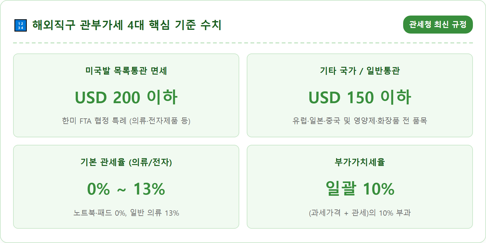
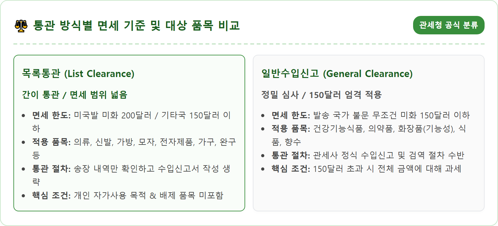
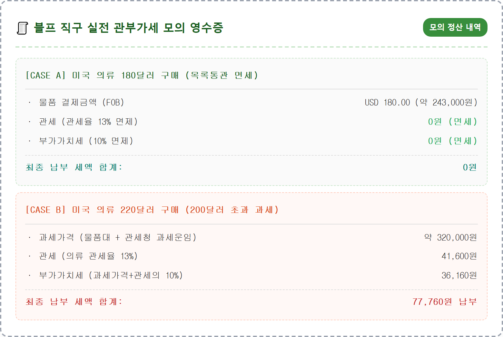
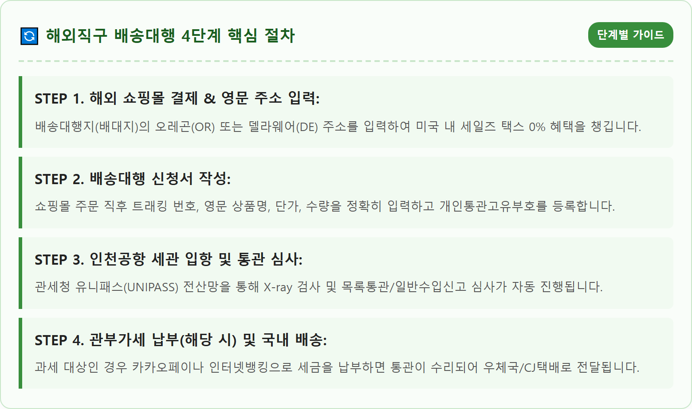
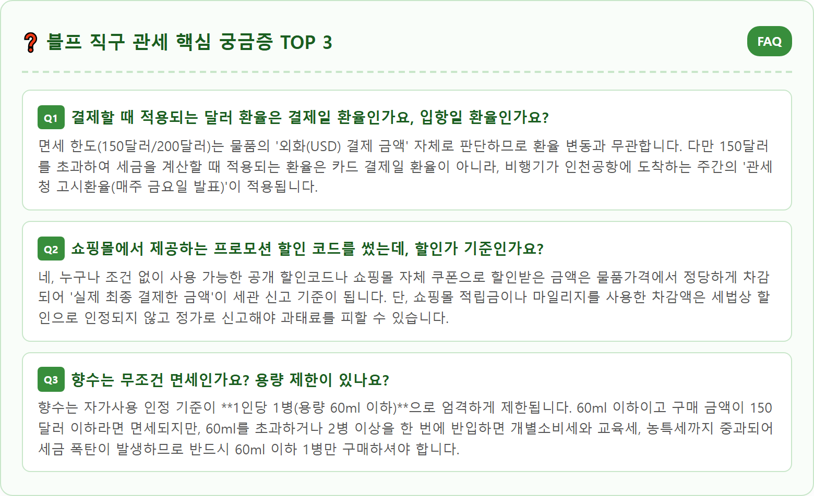

A sleek and modern digital illustration of global online shopping and customs clearance for Black Friday 2026. A neat wooden desk setting with a laptop showing online shopping cart discounts, international cardboard parcel delivery boxes with customs clearance declaration stamps, a digital calculator showing USD and KRW currency exchange rates, and a clear Korean Customs Service (UNIPASS) official guidelines infographic document on the screen. Bright, trustworthy, professional financial and consumer advisory atmosphere, 8k resolution, photorealistic commercial product photography style.

매년 11월 넷째 주 금요일은 전 세계 최대의 쇼핑 축제이자 파격적인 할인 폭을 자랑하는 '블랙프라이데이(Black Friday)'입니다. 2026년 블랙프라이데이는 **11월 27일(금요일)**로 확정되어 있으며, 사이버먼데이(Cyber Monday, 11월 30일)까지 이어지는 대대적인 세일 행사를 앞두고 벌써부터 해외 직접구매(직구)족들의 장바구니 담기가 분주합니다. 아마존, 이베이, 베스트바이, 애플, 폴로 랄프로렌 등 미국의 주요 온라인 쇼핑몰들이 대규모 할인 프로모션을 쏟아내기 때문입니다.
하지만 아무리 물건값을 50~70% 할인받아 저렴하게 샀다고 해도, 한국 세관 통관 과정에서 예상치 못한 '관세'와 '부가가치세' 폭탄을 맞게 되면 국내 정가보다 오히려 비싸지거나 통관 보류로 물건을 제때 받지 못하는 불상사가 발생합니다. 해외직구의 성패는 결국 '관세청 면세 한도'를 얼마나 철저히 지키느냐에 달려 있습니다.
대한민국 관세법상 개인이 자가사용 목적으로 해외에서 구매하여 특송화물로 반입하는 물품은 통관 방식(목록통관 vs 일반수입신고)과 발송 국가(미국 vs 미국 외 국가)에 따라 면세 기준 금액이 다르게 적용됩니다. 복잡하게 얽힌 통관 규정을 미리 숙지하고 주문 금액을 1달러 단위까지 정밀하게 설계해야 불필요한 세금 지출을 완벽하게 차단할 수 있습니다.

해외직구에서 가장 먼저 구분해야 하는 개념은 '목록통관'과 '일반수입신고(일반통관)'입니다. 목록통관이란 송하인과 수하인의 성명, 전화번호, 주소, 물품명, 가격 등이 기재된 특송업체의 송장(B/L) 목록만으로 세관 심사를 완료하는 간소화된 통관 제도입니다. 관세청이 지정한 '목록통관 배제 대상 품목'이 아니라면 대부분의 일반 공산품이 여기에 해당합니다.
한미 자유무역협정(FTA)에 따라, **미국에서 출발하는 특송화물 중 목록통관 대상 품목은 물품가격 미화 200달러 이하까지 전액 면세** 혜택을 받습니다. 옷, 신발, 핸드백, 이어폰, 스마트워치, 태블릿PC, 소형 가전 등이 대표적입니다. 반면 미국이 아닌 일본, 중국(알리익스프레스·테무 등), 유럽(영국, 독일, 프랑스 등)에서 발송되는 물품은 목록통관 대상이라 하더라도 미국 특례를 적용받지 못하며 **미화 150달러 이하**까지만 면세됩니다.
여기서 중요한 것은 '물품가격(FOB 기준)'의 정의입니다. 해외 쇼핑몰에서 결제한 순수 물품 가격에 현지 내 세금(Sales Tax)과 현지 내 운임(미국 내 배송비)을 합친 금액을 뜻합니다. 한국으로 들어오는 국제 배송비는 목록통관 150달러/200달러 한도 판단 시 제외됩니다. 즉, 미국 쇼핑몰에서 상품 190달러 + 미국 내 배송비 9달러 = 총 199달러를 결제했다면 200달러 이내이므로 목록통관 면세를 받을 수 있습니다.
블랙프라이데이 직구에서 초보 직구족들이 가장 빈번하게 실수를 저지르는 함정이 바로 '목록통관 배제 품목'의 합배송입니다. 미국 온라인 쇼핑몰인 아이허브나 아마존에서 의류 150달러어치와 비타민 영양제 20달러어치를 한 장바구니에 담아 총 170달러를 결제했다고 가정해 보겠습니다. 구매자는 200달러 미만이므로 당연히 면세일 것이라 기대하기 쉽습니다.
하지만 관세법상 건강기능식품(비타민, 유산균, 영양제 등)이나 의약품, 식품, 기능성 화장품(미백, 주름개선, 자외선 차단 성분 포함), 향수(60ml 초과), 반려동물 사료 등은 국민 보건과 검역 관리를 위해 '목록통관 배제 품목'으로 묶여 있습니다. 이들 품목은 미국에서 오더라도 무조건 '일반수입신고'로 전환되며, 면세 한도는 200달러가 아닌 **미화 150달러**로 즉시 강등됩니다.
더욱 치명적인 사실은 한 박스 안에 200달러 한도인 옷(150달러)과 일반통관 대상인 비타민(20달러)이 섞여 있으면, **박스 전체가 일반수입신고 대상으로 격하**된다는 점입니다. 결국 총 결제액 170달러는 일반통관 면세 한도인 150달러를 초과하게 되어, 옷과 비타민 전체 금액에 대해 관세와 부가세가 전액 부과됩니다. 따라서 영양제나 식품류는 일반 공산품과 장바구니를 철저히 분리하여 결제하셔야 합니다.

면세 한도를 초과하여 세금을 내야 할 경우, 도대체 세금이 얼마나 부과되는지 정확한 계산 산식을 알고 있어야 구매 여부를 합리적으로 결정할 수 있습니다. 수입 통관 시 부과되는 세금은 크게 '관세'와 '부가가치세' 두 가지로 구성됩니다.
첫 번째 관세 계산의 기준이 되는 금액은 '과세가격(CIF)'입니다. 물품가격에 관세청이 고시한 규격별 국제 선편요금(과세운임)을 더한 금액에 수입 당일의 관세청 고시환율을 곱해 원화로 환산합니다. 이 과세가격에 품목별 고유 관세율을 곱하면 납부해야 할 관세액이 산출됩니다. 노트북, 태블릿PC, 스마트폰, 전자책 리더기 등 IT 기기는 세계무역기구 정보기술협정(ITA)에 따라 **관세율 0%**가 적용되어 관세가 전혀 붙지 않습니다. 반면 일반 의류나 신발은 13%, 가죽 가방은 8%, 화장품은 6.5~8%의 관세가 부과됩니다.
두 번째 부가가치세는 과세가격에 방금 계산된 관세를 더한 금액 전체의 10%를 일괄 부과합니다. 예를 들어 의류 220달러어치를 구매하여 과세가격이 32만 원으로 산정되었다면, 관세 13%(41,600원)와 부가세 10%(36,160원)가 합산되어 약 7만 7천 원이 넘는 세금이 발생합니다. 물품가액의 약 24~25%에 달하는 거액이 세금으로 추가되므로 면세선 관리가 얼마나 중요한지 알 수 있습니다.

과거 직구족들을 가장 공포에 떨게 만들었던 제도가 바로 악명 높은 '합산과세'였습니다. 서로 다른 쇼핑몰에서 다른 날 각각 100달러씩 면세 범위 내로 주문했는데, 항공기 결항이나 현지 배송 지연으로 인해 두 화물이 우연히 '같은 날' 인천공항 세관에 입항하여 200달러로 합산되어 세금 폭탄을 맞던 부조리한 사례가 빈번했습니다.
하지만 다행스럽게도 **2022년 11월 17일부로 관세청 '수입통관 사무처리에 관한 고시'가 전면 개정**되었습니다. 현재 규정에 따르면, 입항일이 같더라도 **구매일자(주문 결제일)가 다르거나 판매처(해외 공급업체)가 다른 물품은 원칙적으로 합산과세 대상에서 완전히 제외**됩니다.
즉, 11월 20일에 아마존에서 120달러짜리 헤드폰을 사고, 11월 23일에 이베이에서 100달러짜리 운동화를 샀는데 두 물건이 11월 28일 같은 날 인천세관에 도착하더라도 각각의 물품이 150/200달러 면세 요건을 갖추고 있다면 합산되지 않고 둘 다 100% 면세 통관됩니다. 단, 조세 회피를 목적으로 '같은 판매처에서 같은 날짜에 의도적으로 쪼개기 결제'를 한 경우에는 여전히 합산과세가 적용되므로 주의하셔야 합니다.
한국 직배송을 지원하지 않는 미국 쇼핑몰을 이용할 때는 미국 내 물류창고인 '배송대행지(배대지)'를 경유해야 합니다. 이때 배대지 센터의 위치 선택이 면세 여부에 결정적인 영향을 미칩니다.
미국은 주(State)마다 소비세(Sales Tax)가 다릅니다. 캘리포니아(CA)나 뉴저지(NJ)로 보내면 의류나 신발 외의 전자제품에는 7~9%의 현지 세금이 붙어 자칫 200달러 면세 한도를 넘겨버릴 수 있습니다. 반면 **오레곤(OR)**이나 **델라웨어(DE)** 센터는 모든 품목에 대해 주 소비세가 0%인 면세 지역(Tax-Free Zone)이므로, 전자기기나 잡화를 직구할 때는 반드시 오레곤이나 델라웨어 주소로 주문해야 현지 세금으로 인한 면세 한도 초과를 방지할 수 있습니다.
또한 배대지에 지불하는 '국제 배송비(예: 15~20달러)'가 200달러 한도에 포함되는지 묻는 질문이 많습니다. 정답은 **"목록통관 판단 시에는 포함되지 않는다"**입니다. 즉 순수 물품 결제액이 199달러이고 배대지 배송비로 20달러를 추가 지불했더라도, 세관에서는 물품대 199달러만 보므로 정상 면세 처리됩니다. 단, 물품가가 201달러로 과세 대상이 되는 순간에는 배송비까지 과세가격에 산입되어 세금이 함께 불어나게 됩니다.
해외직구를 진행하려면 주민등록번호 대신 개인 식별을 위해 관세청이 발급하는 13자리 번호인 '개인통관고유부호(P로 시작하는 번호)'가 반드시 필요합니다. 관세청 전자통관시스템인 유니패스(unipass.customs.go.kr) 웹사이트나 모바일 관세청 앱에서 간편인증을 통해 1분 만에 무료로 즉시 발급받을 수 있습니다.
최근 해외직구 급증과 함께 타인의 개인통관고유부호를 무단 도용하여 불법 물품을 밀수하거나 관세를 탈루하는 명의 도용 범죄가 사회적 문제로 대두되고 있습니다. 자신의 명의가 도용되어 세관 전산망에 블랙리스트로 등록되는 피해를 막기 위해 관세청은 강력한 보안 기능을 제공하고 있습니다.
가장 확실한 방어책은 관세청 유니패스에서 제공하는 **'개인통관고유부호 사용정지 및 재발급'**과 **'국민비서 알림 서비스'**를 신청하는 것입니다. 평소에는 통관부호를 '사용 정지' 상태로 잠가두었다가 직구 결제 직전에만 활성화하거나, 내 번호로 수입신고가 접수될 때마다 카카오톡 알림톡으로 실시간 통보받는 알림 설정을 켜두시면 부정 사용을 원천 차단할 수 있습니다.

블랙프라이데이에 구매한 옷의 사이즈가 맞지 않거나 제품에 불량이 발생하여 해외 판매자에게 반품(반송)을 보내야 할 때가 있습니다. 만약 수입 당시 관세와 부가가치세를 이미 납부했다면, 물건을 돌려보낸 후 세관에 기납부한 세금을 전액 환급 신청할 수 있는 법적 권리가 보장되어 있습니다.
핵심 절차는 물건을 해외로 발송하기 전에 반드시 관세청 유니패스에서 **'위약물품 수출신고'**를 사전에 마쳐야 한다는 점입니다. 세관의 정식 수출신고 수리 없이 우체국 EMS나 일반 택배로 그냥 물건을 반송해 버리면 세관에서는 물품이 실제로 반품되었는지 확인할 길이 없어 기납부 세액을 환급해 주지 않습니다.
수출신고필증을 발급받은 뒤 물품을 반송하고, 판매자로부터 구매 취소 및 카드 승인취소 영수증을 수령하여 관세 환급신청서와 함께 세관에 제출하면 7일 이내에 본인 명의 은행 계좌로 관세와 부가세 전액이 입금됩니다. 고가의 직구 물품을 반품할 때는 이 환급 절차를 반드시 기억해 두시기 바랍니다.
블랙프라이데이 직후인 12월 초순에는 인천공항 세관으로 하루 수백만 건의 특송화물이 한꺼번에 쏟아져 들어오면서 극심한 통관 지체 현상이 빚어집니다. 평소 1~2일이면 통관되던 물품이 사소한 서류 오류 하나로 2주 이상 묶이는 일이 다반사입니다.
통관 지연을 막는 가장 중요한 수칙은 **'수하인 성명, 개인통관고유부호, 휴대폰 번호의 명의 일치'**입니다. 주문 시 입력한 한글 수하인 이름과 관세청에 등록된 개인통관고유부호 명의자가 단 한 글자라도 다르면 세관 전산망에서 오류로 튕겨나가며 통관 보류 상태로 전환됩니다. 가족 명의 카드로 결제하더라도 수하인 이름과 통관부호는 반드시 동일인의 것으로 통일해야 합니다.
또한 배송대행 신청서를 작성할 때 품목명을 'Clothes', 'Goods', 'Sample' 등 모호한 단어로 적으면 세관 정밀 개장 검사 대상으로 분류되어 통관이 기약 없이 미뤄집니다. 'Men's Cotton T-shirt', 'Wireless Bluetooth Earphones'처럼 브랜드와 품목의 구체적인 명칭을 정확히 기재하는 것이 빛의 속도로 세관을 통과하는 프로 직구러의 노하우입니다.
| 구분 | 목록통관 (미국발 특례) | 일반수입신고 (전 세계 공통) |
|---|---|---|
| 면세 한도 | 물품가격(FOB) USD 200 이하 | 물품가격(FOB) USD 150 이하 |
| 대상 품목 | 의류, 신발, 가방, 모자, 가전제품, 완구 등 | 건강기능식품, 의약품, 가공식품, 기능성화장품 |
| 초과 시 세금 | 물품 전체 금액에 관세(0~13%) + 부가세(10%) 부과 | 물품 전체 금액에 관세 + 부가세 부과 |
| 합산과세 기준 | 구매일자·판매처가 다르면 같은 날 입항해도 비과세 | 구매일자·판매처가 다르면 같은 날 입항해도 비과세 |